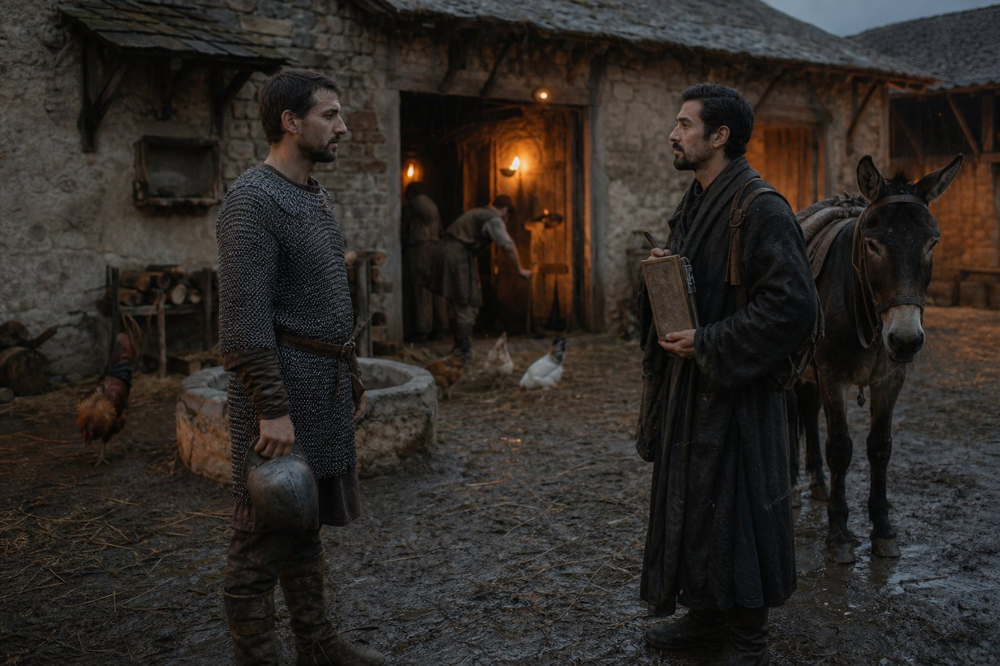
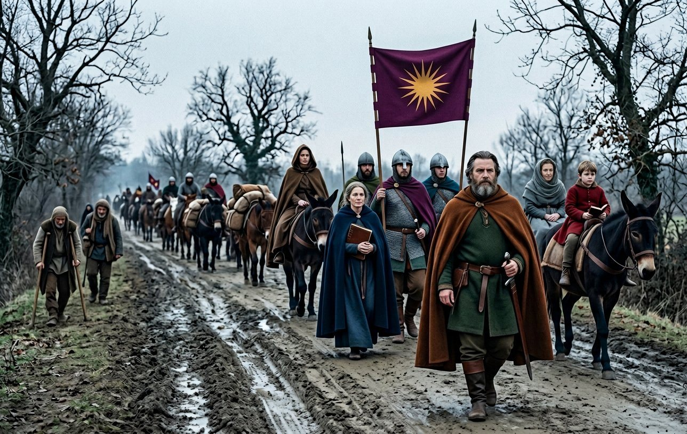
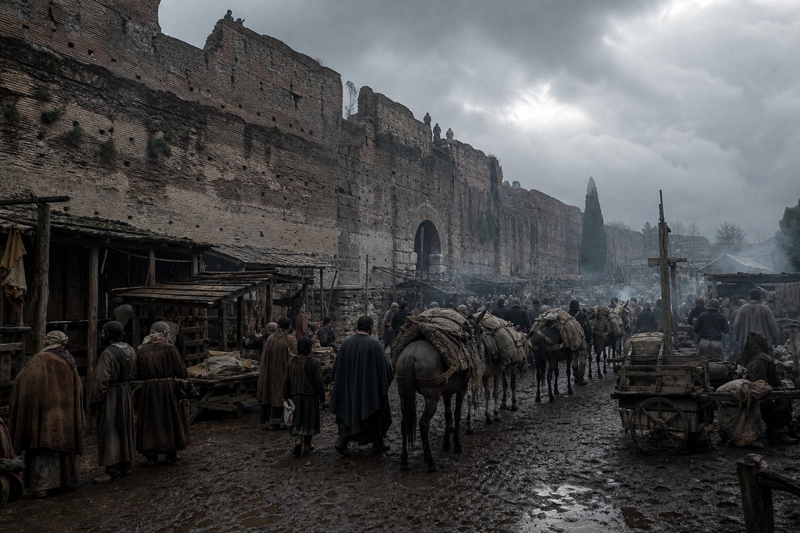
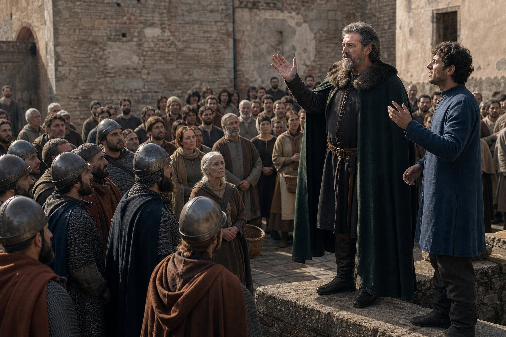
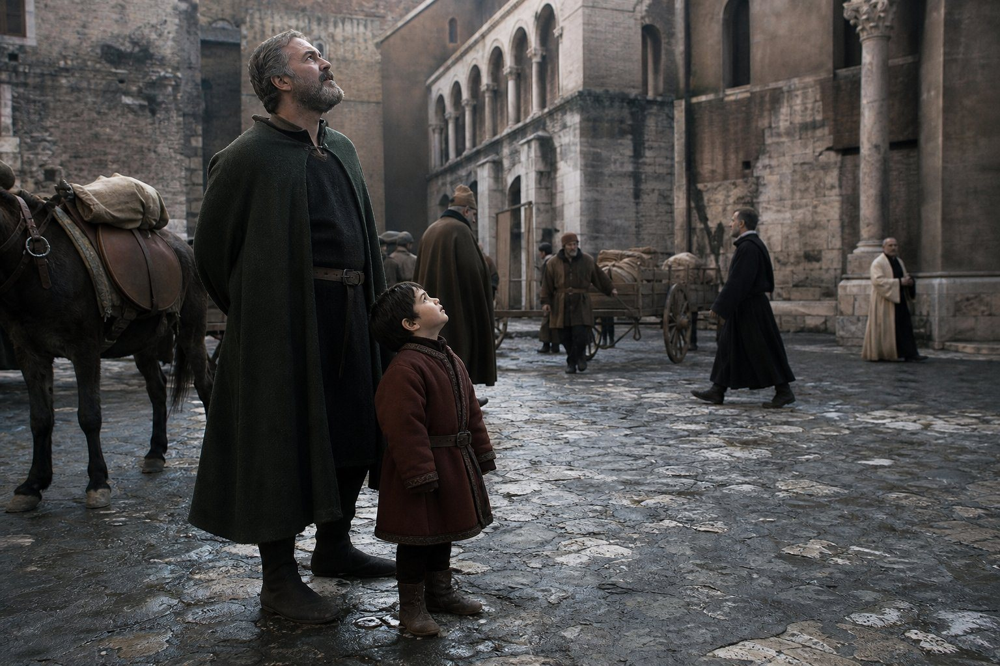
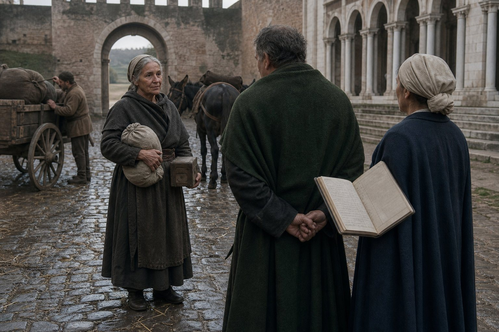
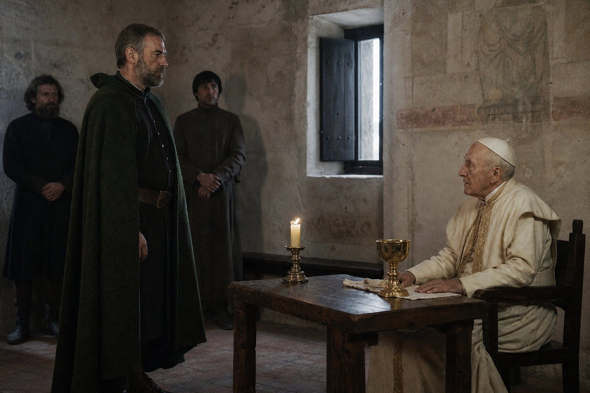
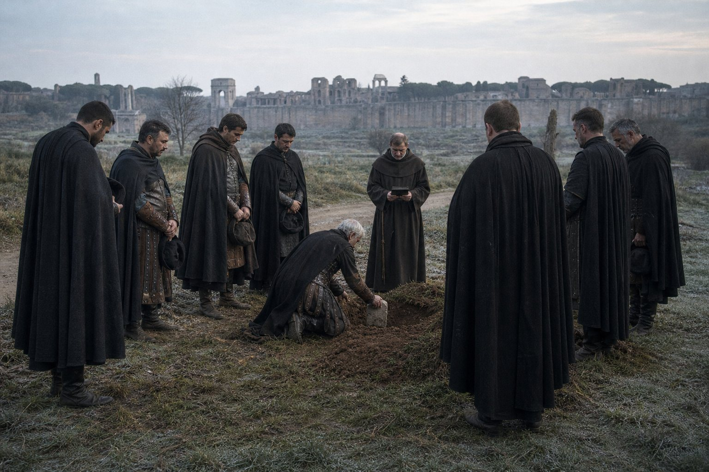
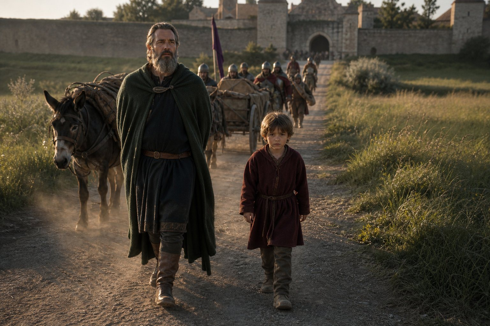

Lonigo, the morning after
I ended the last chapter in this room and I am beginning this one in the same room, eleven hours later, which has never happened in this book before and will not happen again.
There is a thing I did not write last night because it was late and because I did not know how to say it flatly, and I am going to say it flatly now: this is the first chapter of this book in which nothing is being won.
For eighteen chapters there has always been a war at the bottom of the page. A contract, a claim, a county changing hands, a name on a roll. The reader has been able to turn to the end of any chapter in this book and find out who was paid. There is no such line at the end of this one. The record for the next seven months gives a road, a city, four men and a woman joining, three people leaving, one death, and a man of fifty-eight learning to swear in Italian.
I have read that list forty times and I will tell the reader what it is, because it took me the whole winter to see it. It is the shape of the last years of a man who no longer needs to win anything, and I do not say that as praise.
Rovigo, and two men at an inn
We went out of Lonigo on the twenty-eighth of the tenth month of 908, which is the day after the record stops and the day the record starts again, and we went by Rovigo.
Rovigo is a small town in the Veneto with a square, a church, and a bad well. I remember the well and not the church, which is the sort of thing a smith remembers, and I remember that the King paid for the mules out of the chest himself that morning and counted the coins twice, and that Pramda took the purse away from him before he had finished because a king counting money in a public square is a thing that gets written down by the wrong people.
Eight of us had left Regensburg. At Rovigo there were seven, because Vladislav was under a mound in the Trentino, and nobody in the column said his name that day, and I noticed that too.
Antiphates was six years and six months old. He had learned to sit a mule without holding the mane on the road down, and he had a book that Mudra read out of in the evening, and he had begun that winter to ask questions of the sort that a man has to think before he answers. On the road from Rovigo he asked me why the carts went on the left of the road in the Veneto and the right of the road in Bavaria, and I said I did not know, and he said: then write down that nobody knows.
I have written it down. It is the only entry in this chapter in the boy's own words and the reader may make of it what he likes.
On the first day of the twelfth month, at Orvieto, two men came into the yard of the inn where we had stopped and asked for the company, and both of them were taken on the same day, which is why the record gives them the same date and why I give them one paragraph.

Benedetto was a soldier of the Italian country who had been in three lords' service and had a helmet that fitted him and nothing else. Hippokrates was a Greek, of the far Greek country and not of the islands, and he had a bad Greek accent and a worse Italian one and could write. I did not take to either of them at first. I want that in the book, because the record will say in a few years that one of them held the realm's only accolade and the other was a count, and a reader who comes to this paragraph after those pages should know that in the yard at Orvieto they were two men with a mule between them and no one in the company knew their names.
The King talked to Hippokrates for an hour that evening about a book, which is what he does with Greeks who can write, and to Benedetto for ten minutes about a helmet, which is what he does with soldiers.
The country south
From Orvieto south the road is the old road and the country opens out. I had never been in Italy in the winter. I had been in Italy twice in summer, and one of those times was 893, and I have written about 893 in this book already and will not do it again.
What I will write is what a company of forty mules and a king looks like on a pilgrim road in December. It looks like a company. There were other pilgrims on that road going the same way, in twos and threes and once in a body of forty from beyond the mountains, and they had a different sort of walk from ours, and it took me three days to work out what it was, and then I had it: they had no horses to feed.
They walked. Some of them had walked from Germany. There was a woman in the party from beyond the mountains who had a boy of nine with a crutch who could not keep up, and the King put him on a mule on the second day and the woman cried, and Pramda wrote the mule down in the ledger under the same heading she writes everything under, which is *expense*, and the entry says *one mule, one boy, eleven days*, and it is in a book in Regensburg now and nobody will ever read it.

That is what a pilgrimage is, and I say it as a woman who went on one and came back: it is a road with poor people on it.
The walls
We came to Rome on the eighth day of the twelfth month of 908, and I am going to write the approach down properly because I have been told by two men in this company that I write about rooms and not about places, and they are right, and this is a place.
You do not see Rome from a distance. That is the first thing. There is no great shining city on a hill in the Italian country; there is a road, and a plain with a bad name for fever, and then a wall, and before the wall there are sheds and herds and men selling water at the gates.
The wall is the Leonine wall and it is long and it is old and it is full of holes. There were men on it and they were not expecting us and they were not impressed by us. I want to put that down because there is a fashion in the book trade for the great city receiving the traveller with trumpets, and what actually happened is that a gatekeeper in a wet cloak counted our mules without being asked, said a number, and was wrong by two, and argued about it, and was right.
Antiphates looked at the wall for a long time and then said: it is a wall, and I said, yes, and he said: ours at Regensburg is better. Which it is. The boy had been in one capital for a year and a half and had already the habit of judging cities by their masonry, and I did not correct him, because in thirty years of this trade I have never known a mason to be wrong about a wall.
Inside, Rome is a city that has been broken for four hundred years and lived in anyway. There are hills with nothing on them but grass and a bit of a temple, and there are houses built into the side of the temple, and there are churches with the columns of something older holding up the roof.

I have seen Constantinople. Constantinople is a city that is still being a city. Rome is a city that is being a ruin very slowly and with a great deal of business in it.
The Vaticano
We were at the Vaticano from the eighth of the twelfth month, and I am going to try to describe what that place is, and I am going to fail, and the reader should know that I know it.
It is a hill outside the wall with a church on it that everybody in the Latin world says is the church of the fisherman, and beside the church there are houses for the men who serve it and houses for the pilgrims and a palace where the Pope lives when he is not in the other palace.
It is also a market. I had not expected that and it is the truest thing I can say about it. There is a yard where you may buy a relic in a tin box, a candle, a meal, a woman, a horse, a copy of a letter of Saint Paul made that morning by a boy with a good hand, and a blessing, and the men who sell the blessings and the men who sell the tin boxes use the same scales.
I am a Greek in the Pope's yard and I want to be careful here, because there are three kinds of Greeks in this book and the reader has met all of them. There is the Greek who is a citizen of the empire. There is the Greek who is a Christian of the eastern rite, which is what almost every Greek in this company is, and there are Roman priests in that yard who will not say a mass at the same altar as them. And there is my King, who is not a Christian at all.
That is the thing about the Vaticano that nobody in the company had thought through before we got there, and it took me about four days to understand the position we were in: we had walked eight hundred miles to bring the sovereign of a Latin kingdom, who is a Hellene, to the court of the Latin church, in the city where the Latin church keeps the bones of the man it was built on.
Nobody stopped us. That is the whole of it and it is more surprising than any scene I could write. The Pope's men let a Hellenic king and his armed pilgrimage into the yard, and took his money, and sold him candles.
On the twenty-eighth day of the twelfth month the King and Balc sat up talking until the small hours and the record notes that he bonded with him over the journey, and I did not hear the talk, so I will not pretend to it. But I know what Balc is: he has been in this company since 880, he is a rider, he was at the muster when Alajos had six hundred and four men on a field in the Danube country, and he is not a man who talks.
They talked about horses. I will put money on it. Two men of that sort on a long road will talk about horses for six hours and call it a friendship, and the record will write *bonded over the journey*, and both of those things are true at once.
There was one more thing about that yard that I have to put down, because the reader will need it in ten years and because I have not seen another chronicle of this pilgrimage that mentions it.
There are Greeks in Rome. Not many, and not in the yard. There is a street below the hill where a Greek can buy bread that tastes of Greece and hear his own language spoken badly by Italians, and there is a house where the eastern rite is said, and the men of the Pope's household do not go there and do not forbid it.
I went. Twice. I am not a woman who goes to a service twice in a winter for the singing, and I went because it was the only room in that city in which nobody was looking at my King.
That is the position of this company in the ninth year of the tenth century, written by a smith in a paragraph: we were the armed Greeks of a Latin kingdom, and the only place in Rome where we were ordinary was a small church that the Pope's men did not attend.
The Wrath of Zeus
On the fourth day of the first month of 909 the King preached the Wrath of Zeus in Rome.
I was there. I want to put that first because it is the reason this section exists and because a great many things in this book that sound like they need a poet do not.
It was in the open, in a yard off the pilgrims' road, on a cold clear morning, and there were perhaps three hundred people, of whom I would say two hundred were ours.
The Wrath of Zeus is the sermon a Hellene preaches when he wants to be understood by people who are not Hellenes. It is not about the gods, or not first. It is about what happens to a man who breaks his oath, and to a city that shelters men who break their oaths, and it is a sermon with a great deal of thunder in it and, underneath the thunder, the plain proposition that the world is watched and that a debt is a debt.
He preached it in Greek and Hippokrates put it into Italian in pieces as he went, and here is what I will say about the performance: it was a contract, delivered to people who do not sign contracts.
The Romans listened. Some of them laughed, and the laughing stopped. Not because he threatened them; he did not. Because about halfway through, an old woman in the front said something in Italian and he stopped and asked Hippokrates what she had said, and Hippokrates told him, and the King answered her directly, in bad Italian, slowly, and she said something back, and they went on for four exchanges, and after that the yard was quiet and stayed quiet.
I asked Hippokrates afterwards what she had said. He said: she asked him who pays when the oath is broken and there is no one left alive who swore it. And he said: he told her the debt stays with the city.
That is a Greek answer to a Roman question and it is the reason the rest of this volume exists, and I am not going to explain it further than that.

Here is the thing that a reader three hundred years from now will want and that I can give him. Three hundred people heard a Hellenic king preach in the yard of the Pope's own hill and nothing happened. No bishop came out. No stone was thrown. The city took it the way a city takes a fair, and the King went back up the hill and ate his dinner.
And I stood there in the cold with a smith's hands and thought: this is the safest this man will ever be in this country, and in six months he will be home in a kingdom where the bishops have already risen once.
Antiphates in Rome
The boy was six when we came in and seven when we came out, and he spent five months in the yard of the Vaticano, and the record says nothing about any of it, so what follows is what I saw and is the book's.
He was taken to the church three times. The first time by Mudra, who read to him out of a book beforehand so that he would know what he was looking at, and the second time by Pramda, who told him who had paid for the lamps, and the third time by his father, who said nothing at all and let him stand and look.
The boy looked at the church for a long time and then asked his father what it had cost. The King said he did not know. The boy said, then how do we know it is a good one.
I laughed out loud in a church, which is a thing I have done once in my life, and I have written it here because it is the only joke in this chapter and because it is the whole of the education that boy was getting: three adults, three kinds of arithmetic, and a father who never once told him a pretty thing.

The other thing that happened in Rome, and I did not see it and Pramda told me, is that a bishop asked the King, in the yard, in front of forty people, what rite the boy would be raised in.
The King said: mine.
The bishop said: and the kingdom's?
And the King said: you have just heard me.
I do not know what the bishop made of that. I know what I made of it, which is that a man had just answered a question in public that he had spent two years declining to answer in private, and that in ten years this answer will be the most expensive sentence anyone in this book has spoken.
The vulgar tongue
On the eleventh day of the first month he began to learn Italian.
The record says he learned the Italian vulgar tongue and gives no more. I will give more, because I taught him some of it and because it is the funniest thing that happened on the whole pilgrimage.
He was fifty-eight. He could read Latin badly and Greek well and he had been in eleven countries and had never once, in thirty years, learned the language of any of them. He had learned to say *how much* and *no* and *where is the ford* in six tongues and had called that enough, and he had been right, because a captain with three thousand men does not need to talk to the country.
He needed to talk to the country now. That is the whole of what changed in the winter of 908, and it is not a thing the record thought worth a sentence, and I think it is the most important sentence in the record for the whole of this volume.
A king who cannot talk to his own bishops is not a king, he is a garrison.
So he sat in a room at the Vaticano with a priest who was paid by the hour, and he learned to say *the road is bad*, *my son is seven*, *I have paid already*, *bring me the man who owns this house*, and — this he learned first, before any of the others, on the first afternoon — *I do not understand, say it again more slowly*.
He was bad at it. I want the reader to have that too. He was a man who had been the best swordsman in any room he entered for twenty years, and he sat in that room in the winter of 909 with a boy's grammar and got the endings wrong and was corrected by a priest, and did not once lose his temper, and I have watched him lose his temper over a badly set horseshoe.
By Lonigo he had been able to argue with a farrier. By Rome he could argue with a bishop, which is a different vocabulary and a shorter one.
Eupraxia
On the fifth day of the first month of 909, three days before the sermon, Eupraxia told the King she was staying.
She had been in this company since the tenth month of 879, which is nine years longer than me. She came out of the north with us. She was on the roll at Silistra in 883 and at the count of 893 and at the count of 898, and she walked to Rome at fifty-odd years of age and she walked slowly and she never once asked for a cart.
She had a calling. That is the record's word and it is the right word, and I am not going to make it into a scene with a candle in it.
What I will write is the thing I actually saw, which was a woman of nearly sixty at the gate of one of the houses behind the church with a bundle and a wooden box, and the King standing in front of her not saying anything, and Pramda behind him with the ledger open, because Pramda's first thought in every situation in this book has been the ledger and it has never once been wrong and it has never once been kind.

There is a column in the ledger for a person leaving the company. It has a date and a reason and the reason is one word. Eupraxia's entry says *religion* and it is the only entry of its kind in thirty years.
She said something to me at the gate that I have not written down anywhere and am writing here. She said: you will be the last of us to leave, and I said, I am not leaving, and she said, that is what I said.
I have thought about that sentence for a year. I think she meant it kindly. I have decided to believe she meant it kindly, and I have decided that in the way a woman decides a thing she cannot check.
The Pope
On the first day of the second month of 909 the King paid his respects to the Pope, and on the same day Kyriake left the company.
That is the record, in that order, and I have put the two things in one paragraph because the record put them in one day and because I want the reader to feel what I felt when I read it: a king goes up a hill to be received by the man who is the reason half his subjects will not obey him, and while he is up there a woman who has been with us nine years walks out of the gate with her bundle and nobody writes it down except a paymaster.
I was not in the room with the Pope. Four people were, and Pramda was one, and the King was another, and I have asked Pramda what happened and Pramda said: he was courteous and the Pope was courteous and it lasted a quarter of an hour.
Two courteous men in a room for a quarter of an hour and the whole of the Latin world is in the balance of it, and the balance did not move, because it never does. The Pope did not bless the kingdom. The kingdom did not submit. Nobody excommunicated anybody. They gave each other gifts, which is what courteous men do when they have both decided not to say the thing.

I have wondered since whether the King asked him for anything. I do not know. Pramda does not say and I did not ask her twice, because I have learned in this book when a woman is telling me the whole of a thing, and she was.
Here is what I will put in, marked as mine and not the record's: a man of fifty-eight who has spent the winter learning the language of the country he rules, walks up a hill to be courteous for a quarter of an hour, comes down, and by the spring is in love and planning the next pilgrimage. That is not a man who has stopped. That is a man who has decided that the one thing he cannot do by force is the only thing left worth doing, and has not admitted it to himself.
Kyriake I will give four lines. She was of the company nine years, she was a rider, and she left on the first day of the second month of 909 and the record gives no reason and this book gives none. She is not in the record again. I have not seen her since and I do not expect to.
Alajos the Temesite
On the fifth day of the second month of 909, Alajos the Temesite died in Rome of old age.
The reader has met him. He is in the sixth chapter of this book, at the muster in the Danube country in 880, with six hundred and four men on a field against our thousand and ninety-seven, and nine of ours died in those two battles against eleven hundred and seventy-two of his, and he was a lord of the country beyond the hills and he had a claim, and I wrote about the arithmetic of that field in this book thirty years ago and I have not thought about him since.
Then he turned up in the company. He was with us at Silistra and in the hills above Kičevo and at Vidin and at the count of 893 and at the count of 898 and he came to Rome at an age that I am not going to put a number on, because the record does not give one and I have learned in this book not to give numbers the record does not give.
Nine years ago he had eleven hundred and seventy-two men killed against us and then he joined us and then he died in a bed in a pilgrim house with a priest at the door who was not of his faith, which he had stopped minding about somewhere in the 890s.
We buried him outside the wall, because that is where you bury a Hellene in Rome, and the King said *say the name* at the grave as he says it at every grave, and nine of us said Alajos, and then Pramda wrote in the ledger under the column with one word in it and the word was *age*.

I want to end this section with the arithmetic, because it is the arithmetic of this entire chapter and nobody else in the company has said it out loud. In the fourteen months from Lonigo to the spring of 909 the company took on two men and lost three, and one of the three was a woman who left for God and one was a woman who left for nothing recorded and one was a man of eighty-odd years who had come into it as an enemy.
A company that loses more than it takes is a company that is ending. Not this year. Not in ten years. But the reader should have the number, because I had it that winter and I did not like it, and I wrote it in my own tally and not in the book until now.
Martina
On the ninth day of the third month of 909 the King fell in love with Martina, and on the first day of the fourth month she joined the company, and the record's word for what she is to him is *lover*, and the record adds, in the way the record has, that she is the first since the Queen.
I am not going to write the scene. There is no scene. There is a woman in a town in the Italian country in the spring of 909, and a man of fifty-eight who has been on a road for six months without his wife, and the record gives a date and a word and I am not going to make more of it than the record does.
What I will write is what is awkward in it, which the record does not touch and which every woman in this company saw at once. The Queen is at Regensburg. Mudra is on the mule behind him, and has been since the fourth month of 902, and has a son of four at Regensburg who is the King's second son, and is not called anything in the record at all.
So when the record says *the first since the Queen*, the record is counting wives. It is not counting Mudra, because Mudra is not a wife, and the record is a ledger of titles and Mudra has no title, and this is the second time in this book that I have had to write a sentence like that and both times it has been about the same woman.
Mudra said nothing about Martina. Not to me, and as far as I know not to anyone. She read to the boy that evening the way she read to him every evening, and the next day she was on the mule, and that is the whole of her comment.
I have put the dates in this section in the order the record gives them and I want the reader to notice the gap: he falls in love on the ninth of the third month and she joins the company on the first of the fourth, which is three weeks, and in the three weeks between, a king with a kingdom eight hundred miles away took on a woman of the Italian country with no household and no name that anyone in this book has written down.
Rivai, who was not there
There is one more thing in the record for the spring of 909 and it is a mistake, and I am going to print it as it stands and then say what is wrong with it.
On the eighth day of the third month the record files a memory, and the memory says that the pilgrimage to Rome was made *with a friend, Rivai*.
Rivai was not on that road. I listed the eight at Regensburg in the last chapter and I listed them from the record, and Rivai was not one of them; Rivai was a duke with a march to hold and a daughter called Yehudis, and he was in Bavaria the whole winter, and I know that because he sent letters.
So either the record is loose about a name, or Rivai joined us somewhere between Bavaria and Rome and the record did not think it worth an entry, and I have weighed both and I cannot tell you which. What I can tell you is what the memory is doing: on the eighth day of the third month of 909, in a pilgrim house at the Vaticano, a man sat down and thought about the road he had come by and the name that came into his head was Rivai.
I have written in this book that a memory is a fact about the man remembering and not about the road, and this is the plainest case of it in thirty years. He remembered the friend and not the eight, and I have put both lists in the book and the reader may have them both.
The way home
We came home by Casentino, then Trento, then Rottenburg, and were at Regensburg in the sixth month of 909, and I will give the road four paragraphs because the road is the point.
In the mountains above Casentino it rained for six days and the mules went badly and one died, and Pramda wrote *one mule, dead, mountains*, and I have never in my life seen a better entry in a ledger.
At Trento we came to the town where Vladislav had been buried and the priest could not find the grave, and the King stood in a churchyard in the rain for the better part of an hour while three men argued about which mound it was, and then said: say the name anyway, and eleven of us said Vladislav in a churchyard where nobody could point at him.
At Rottenburg the boy Antiphates, who was seven in the fourth month, came off the mule and walked the last mile into the town on his own feet because he had decided that a man should arrive walking, and nobody in the company laughed, and the King walked beside him and did not help him and did not slow down.

I put that in because it is the only paragraph in this chapter in which I can see the next twenty years of this book, and I did not know that when I wrote it.
What he brought home
Now the accounting, which is what a smith does at the end of a job.
He brought home: a kingdom that had run for nine months without him. A country that had risen against his god in the fifth month of 908 and been beaten in the sixth and had not, in any way that matters, been convinced. A prisoner called Lothar in a room at Regensburg with a guard at the door, who had told Bavaria that the king's god was an error and was still telling it. A rival called Guntbald, twenty-six, a peasant leader, who had been made a rival of the King on the twenty-fourth day of the ninth month of 908 while we were on the road, which is to say that the country had discovered it could hurt him with a man and a crowd.
And a pen. That is the last item and it is the one I have been walking towards for nine sections. He brought home a habit.
The record for the nine months after Rome gives two pilgrimages: Servia in Thessaly in 910, Tunis in 912, Athens in 913. Three more, in four years, each one longer than the last. That is not a king going once to a holy place out of devotion. That is a man who has found the one thing in his life that cannot be taken from him by a battle.
I am a physician as well as a smith, which the reader may have forgotten and which I have not, and a physician learns to notice when a man who has never been ill begins to arrange his life around a thing that is not his work.
Here is the second accounting and it is the one the reader will come back to.
The kingdom he came home to in the sixth month of 909 was the largest thing in the German country and it was not a country. It was a kingdom of Bavaria with a march in the mountains and counties on the Danube and counties in the south that had been conquered in the last three years and given to men from a company, and every one of those pieces had its own bishop, its own tongue, its own saints and its own opinion of a Greek.
The Bavarians are the country's own faith, which the record calls Chalcedonian, and it rose once in the fifth month of 908 and was beaten in the field in a day and was not changed by it. The Carinthian country to the south is Slav and speaks what it speaks. The counties he took from the Franks have Frankish lords and Latin priests who have never heard the name of a Greek god and would not write it down if they did.
That is what the pillars of a kingdom are when you look under them, and the record calls it a realm of forty regiments because the record counts regiments and not altars.
The King took a kingdom in 906 because it was the last thing he had not taken. He went to Rome in 908 because there was nothing left in Bavaria that a sword could settle. And in the spring of 909, at fifty-eight, in a pilgrim house, he began to learn the language of the country he ruled and fell in love with a woman of it, and both of those things are a man turning away from the room he has spent thirty years in and looking for another door.
I am not going to say what I think happens next. This book has taught me that a narrator who says what happens next is usually wrong and always a bore.
But here is what I will say, and then I will close the chapter and put this in the post to Regensburg with the ledger.
Nobody who came out of the north is going to die in Bavaria. That is not a prophecy, it is arithmetic: we are all of us the wrong side of fifty and the country is not ours. Eupraxia is already staying behind. There will be a year, and I do not know which, in which I write the last of those entries, and after that this book will be kept by someone who was not there at the wreck.
Which is what the boy on the mule is for, and I do not think the King has understood that, and I am not going to be the one to tell him.
*Here ends the first chapter of the fourth volume, on the road home in the sixth month of 909, in the hand of Matako of the company, who is fifty.*